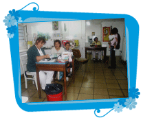

| Inicio | Objetivo | Voluntarias en el Hospital | Talleres | Eventos | Fotos | Grupo de Voluntarias | Colaboraciones |
 |
Rutina Servicio de atención al público: Áreas donde se brindan servicios: - Medicina A.B.C. Además ayudamos a: - Retirar, clasificar y distribuir las donaciones recibidas (que usualmente incluyen ropa y artículos en general). - Acompañar a donantes que quieren entregar personalmente las donaciones en su recorrida por los distintos servicios. Esto se hace previa autorización de la Dirección del Hospital en coordinación con las voluntarias. - Organizar la presentación de espectáculos (títeres, magos, payasos, coros,etc.) que se llevan a cabo en el Hospital. Esto implica informar a los distintos sectores acerca del tipo de actividad, día y hora del mismo, así como también la responsabilidad por todo lo concerniente al apoyo logístico necesario para la realización de eventos. - Reparto de juguetes en las siguientes fechas : Navidad, Día de Reyes y Día del Niño. - Compras de electrodomésticos y material diverso. Estas compras se realizan a fin de satisfacer pedidos concretos realizados por distintos servicios del Hospital, aspiradores pediátricos, lentes de receta, medidores de presión arterial, heladeras, estufas, ventiladores, cortinas y todo lo necesario que económicamente se pueda solventar y el Hospital no pueda hacerlo. Todo esto se hace previo pedido por escrito de la Dirección del Hospital. - Apoyo financiero para cubrir el costo de locomoción de pacientes que están bajo tratamiento por lo cual no deben interrumpir su asistencia al centro hospitalario pero que no disponen de dinero para su traslado. Este apoyo se brinda una vez que se recibe el correspondiente informe del asistente social. - Servicio de secado de ropa. La Asociación dispone actualemente de diez secadoras y seis centrifugadoras, cuya compra e instalación corrió a cargo del grupo de voluntarias. Dicho equipamiento es operado exclusivamente por las voluntarias, y se hace con el fin de que como las salas se comparten a veces hasta con 5 camas, se pueda incentivar a la higiene, orden y costumbres del lavado de las prendas que tengan en uso diariamente de los niños y sus acompañantes. - Para ello también proporcionamos toallas, jabones de tocador y jabones para el lavado de ropa. Todos los gastos son solventados en gran parte con las ventas económicas realizadas todos los viernes del año menos los feriados, donde los “clientes” son los propios funcionarios del Hospital, padres y madres de los internados y otros externos. Los precios son a precios sumamente módicos. Otras actividades de las voluntarias:Por último es de interés destacar que el apoyo que brindan las voluntarias pertenecientes a esta Asociación va más allá de las instalaciones propias del Hospital Pereira Rossell. |
| voluntariasdelpereira.org.uy ® 2006 - All rights reserved. |